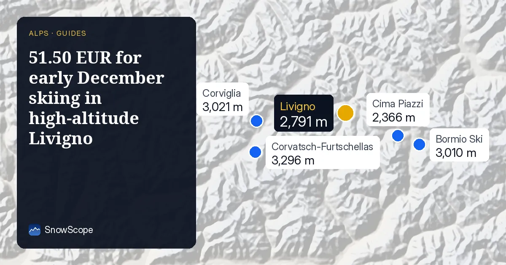

51.50 EUR for early December skiing in high-altitude Livigno
51.50 EUR is the daily price for an adult lift pass in Livigno during the early December promotional window. This low price lasts until 18 December 2026 and is the best way to ski this high Italian valley on a budget. You can get 83 km of runs for a much lower cost if you visit before the Christmas crowds arrive.
See the live snow forecast for Livigno in the SnowScope appSnow depth, powder alerts and the 3D map, free.
Low prices before the Christmas rush
Skiing in the early season is a smart way to save money if you know where to go. In Livigno, the official site offers an adult 1-day pass for 51.50 EUR during the promotional period from 28 November to 18 December 2026. This is a great deal for a mapped ski area that has 37 lifts and a vertical drop of 979 m. If you stay for a full week, the adult 6-day pass costs 258.50 EUR during this same window.
The village sits at 1811 m, which is quite high for the Alps. This height helps keep the air cold and the snow dry even early in the winter. Because the lowest lift starts at 1811 m, you do not have to worry about low-altitude rain as much as in other resorts. For a frugal skier, these three weeks in December offer the best balance between a low price and access to a large mountain area.

Early December snow expectations
Snow depth varies depending on which part of the mountain you ski. At the top of the lifts at 2791 m, our snow history shows that there is 30cm or more of snow in 93 % of past winters during the first week of December. By the third week, from 15-21 December, this figure reaches 100 % of past winters. This makes the top of the mountain a very safe bet for early season turns.
Mid-mountain at 2301 m also has decent odds for the early weeks. In the first week of December, there is 30cm or more of snow in 57 % of past winters. This improves to 85 % of past winters by the middle of the month. On 13 November 2026, the snow now depth is 1 cm at the base and 2 cm at the top. The two-week outlook suggests a range of 12 cm to 26 cm of new snow is coming to the upper slopes.
The base of the resort at 1811 m is often thinner in early December. In a usual December, the base depth is 28 cm. During the first week of the month, there is 30cm or more of snow in only 30 % of past winters. This is why it is better to focus your skiing on the higher runs where the mapped ski area reaches up to 2791 m. The snow usually lasts from late October at the bottom and late September at the top.
How prices change in late December
If you wait until later in the month, the prices go up significantly. From 19 to 25 December 2026, the adult 1-day pass increases to 66.00 EUR. While the snow odds at the base improve to 57 % for 30cm or more in the final week of the month, the extra cost might not be worth it for a budget traveler.
The highest prices start on 26 December 2026 for the high season. An adult 1-day pass then costs 74.50 EUR. For comparison, the usual depth on 15 December is 81 cm at the top and 45 cm at mid-mountain. While the snow is deeper, you are paying a lot more for the same 83 km of runs. Staying within the promotional window that ends on 18 December is the best way to keep your costs down.
Comparing Livigno with Pontedilegno-Tonale
It is helpful to look at other options like Pontedilegno-Tonale. That resort has a much lower base at 1120 m, which means the bottom of the mountain is often much thinner. In a usual December, the base at Pontedilegno-Tonale has only 17 cm of snow on 15 December. In contrast, Livigno has 27 cm at its base on the same date. Livigno also has more runs, with 83 km compared to 56 km at Pontedilegno-Tonale.
However, Pontedilegno-Tonale has a higher top station at 2993 m. This height gives it a usual December depth of 101 cm at the top, which is more than the 85 cm usual depth at the top of Livigno. We did not check the prices for Pontedilegno-Tonale on the official site, so we cannot compare the costs. For a skier focused on the lowest price, the 51.50 EUR deal in Livigno is a solid and confirmed choice.
Long term snow trends in the valley
Our snow history of 46 past winters shows that December is actually getting snowier in Livigno. At mid-mountain, the December average was 39 cm during the first 15 winters between 1980-81 and 1994-95. In the last 15 winters between 2011-12 and 2025-26, that average rose to 52 cm. This is a positive sign for people who like to ski early in the season.
The top of the lifts saw an even bigger increase. The average December depth went from 59 cm in the first 15 winters to 92 cm in the last 15 winters. Even though last winter was thin with a December average of only 12 cm at the base, the long-term trend is strong. The thinnest December at the top was in 2024-25 with 37 cm, which is still enough to cover the rocks on the high runs.
Tips for skiers
- Book your lift pass on the official site before 18 December to secure the 51.50 EUR promotional price.
- Target the week of 15-21 December for a 100 % chance of finding at least 30cm of snow at the top of the mountain.
- Focus your skiing on the runs above mid-mountain at 2301 m where snow is more reliable in early December.
- Check the avalanche bulletin before skiing off-piste, especially if the new snow hits the 26 cm forecast range.
More maps (external sites)
References and credits
- Livigno, official ski pass price list 2026-27 (PDF) www.livigno.eu/hubfs/tariffe_26-27.pdf
- SnowScope, December snow at three heights and today's snow map snowscope.app/
About these numbers
Snow now and the two-week outlook: SnowScope forecasts (outlook from ECMWF and GFS, a range, not a promise). Lifts and runs: OpenSkiMap mapping. Prices: the official resort pages listed below, read on 2026-11-13; prices can change, check before booking.
Official avalanche bulletins: AINEVA – Associazione Interregionale Neve e Valanghe
Cite this report
For research, teaching or the press: the numbers and charts are free to reuse under CC BY 4.0 with this citation.
SnowScope (2026), 51.50 EUR for early December skiing in high-altitude Livigno, https://snowscope.app/blog/en/2026/11/livigno-december-ski-promo-price-snow-odds-2026.html, accessed 2026-11-14
SnowScope (Atlas Labs). (2026, November 14). 51.50 EUR for early December skiing in high-altitude Livigno. SnowScope snow reports. https://snowscope.app/blog/en/2026/11/livigno-december-ski-promo-price-snow-odds-2026.html
BibTeX
@misc{snowscope2026livignodecemberskipromop,
author = {{SnowScope (Atlas Labs)}},
title = {51.50 EUR for early December skiing in high-altitude Livigno},
year = {2026},
month = nov,
howpublished = {\url{https://snowscope.app/blog/en/2026/11/livigno-december-ski-promo-price-snow-odds-2026.html}},
note = {Published 2026-11-14 13:29 UTC; accessed 2026-11-14}
}· CC BY 4.0 · Methods, data and tools →
Livigno: snow and temperature by height, this winter vs last (tools) →
Follow Livigno
Free: a message when fresh snow is coming, and the forecast every morning.
More snow reports

Ten European ski resorts ranked for December value, led by Les 2 Alpes with 75 cm of mid-mountain snow.

A cheap 3-day Lake Como plan for December with real 2026-27 prices: trains, ferries, a funicular and a ski day at Piani di Bobbio or Madesimo, what you save compared with Cortina, and the chance of snow at Christmas.

Dolomites forecast for December 2026: warmer by 1.7 °C, slightly wetter, 30 cm snow by year-end, Christmas white at mid-mountain. Data from 10 November.